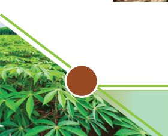
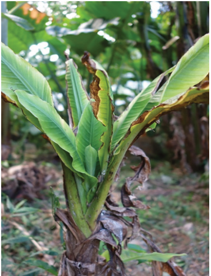

(i) Banana Bacterial Wilt: The disease is caused by the pathogen Ralstonia
solanacearum. It spreads easily through infected planting materials, farm
tools, and insects, including bees, through the male bud. Symptoms of the
disease include wilting of leaves, yellowing, and bacterial ooze from cut
stems. It is controlled by Quarantine measures, destruction of infected
plants, disbudding of male flower buds after fruiting, and soil treatment.
(ii) Bunchy Top Disease: This disease is caused by Banana bunchy top virus
(BBTV) and transmitted by banana aphids at any growth stage. It can also
be spread through infected planting material such as suckers and tissue
culture plants.
Symptoms: The disease starts as dark green spots or streaks on minor veins
or the midrib. Later leaves become smaller, chlorotic with upside-down
edges. They become dry, brittle and erect, creating a “bunchy top” look
in banana plants (Figure 2.5). Flowering is limited, and only very small
bunches may be produced from infected plants.
Management: The disease can be managed by controlling banana aphids,
removing and destroying infected plants, and using virus-free banana
planting materials.


Figure 2.5: Symptoms of Bunchy top disease in banana plants